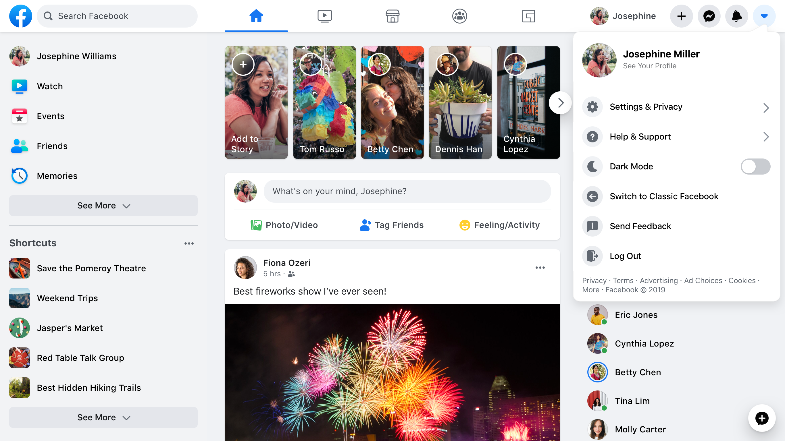
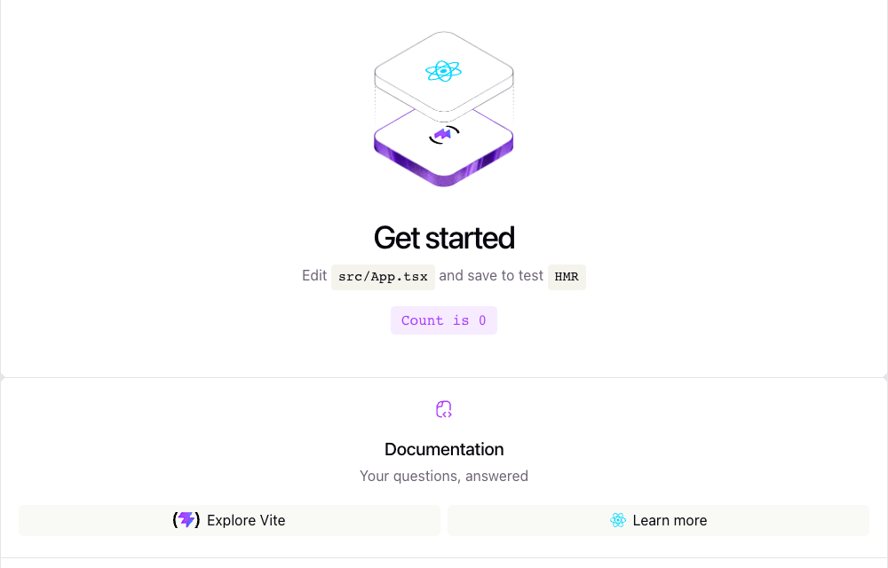

React 기초
React의 등장 배경·UI 설계 철학
LECTURE 04
React 등장 배경
React의 등장 배경
데이터 변화에 맞춰 화면을 직접 수정하고 일치를 유지해야 했던 문제
기존의 DOM 직접 수정 방식
- 문제 - 화면 수정 책임이 개발 코드 곳곳에 분산
- 데이터가 바뀔 때마다 DOM과의 일치를 직접 유지
- React의 제안(2013) - 현재 데이터에 맞는 화면을 기술
- React = re(다시) + act(작동): 바뀐 데이터에 맞는 화면을 다시 기술
- 컴포넌트가 데이터에 따른 화면을 반환
- React가 이전 결과와 비교해 필요한 DOM 변경을 반영
React의 역할
데이터에 맞는 웹 서비스 화면을 구성하는 JavaScript 라이브러리
웹 서비스 안에서의 위치
서버 · 데이터베이스
요청 처리 · 공유 데이터 저장
브라우저
React
컴포넌트로 UI 계산 · 변경 반영
DOM · CSS
문서 구조 · 스타일 · 화면 표시
Facebook.com 재설계
React UI와 CSS·코드 로딩·데이터·탐색 구조의 변화

- CSS - 스타일과 다크 모드
- 원자적 CSS로 홈 화면 CSS 80% 축소 · 변수로 테마 전환
- JavaScript - 필요한 코드부터
- 첫 화면 표시와 이후 기능에 맞춰 코드를 3단계로 분리
- 데이터 - Relay · GraphQL
- 필요한 데이터를 미리 요청 · 피드 항목을 순차 전달
- 탐색 - 다음 화면 준비
- 이동할 화면의 코드 · 데이터를 미리 가져와 전환 지연 감소
React의 발전 과정
React 사용 현황
2025 Stack Overflow · 전문 개발자
React를 사용하는 서비스
아이콘을 선택해 새 탭에서 실제 서비스 화면 살펴보기

React의 UI 설계 철학
화면의 구성 요소·재사용·데이터와 표현의 관계
React UI 설계 철학
화면을 컴포넌트로 구성하고, 현재 데이터와 상태에 따른 모습을 선언
- 컴포넌트 - 화면을 나누어 조합하는 UI 단위
- 예 - 검색창 · 상품 목록 · 상품 행
- 상태 - 컴포넌트가 기억하고 갱신하는 값
- 예 - 검색어 · 재고만 보기 선택 여부
상태 변경 → 관련 컴포넌트의 UI 재계산 → 조합된 페이지에 반영
컴포넌트 기반 화면 구성
상품 검색 화면의 컴포넌트 경계와 포함 관계
- ProductApp - 상품 검색 화면 전체
- SearchBar와 ProductTable을 조합
- SearchBar - 검색 조건 입력
- 상품명 입력 · 재고 조건 선택
- ProductTable - 결과 목록 표시
- 분류별 상품 · 검색 결과 개수
- ProductRow ×6 - 상품 한 행의 반복
- 각 행에 상품명 · 가격 · 재고 여부 표시
컴포넌트의 재사용과 일관성
ProductRow 하나로 여섯 상품 행을 표시
- ProductRow - 같은 UI 정의를 여섯 번 사용
- 사과 $1 · 용과 $1 · 패션프루트 $2 등 서로 다른 상품 데이터
- 표시 규칙 - 모든 상품 행에 공통 적용
- 상품명 - 왼쪽
- 가격 - 오른쪽
- 품절 - 색상 · 문구로 구분
- 재사용의 효과 - 한 곳의 표시 규칙을 모든 행에 적용
- ProductRow 수정 → 여섯 상품 행에 함께 반영
데이터 변화와 화면 표현
재고 조건 선택 → 품절 2개 제외 → 결과 6개 → 4개
명령형과 선언형 프로그래밍
클릭 카운터로 비교하는 DOM 직접 수정과 UI 선언
- 명령형 - 작업의 순서와 방법을 직접 지정
- jQuery - 버튼을 만들고 클릭 이벤트를 연결
- 클릭 후 button.text(...)로 화면의 텍스트를 직접 수정
- 선언형 - 원하는 결과의 조건이나 형태를 정의
- React - 현재 count에 맞는 버튼 UI를 기술
- 클릭 후 setCount(...)로 상태 변경 · React가 화면 갱신
jQuery · DOM 직접 수정
let count = 0;
const button = $('<button>').appendTo(host);
button.text(`Clicked ${count} times`);
button.on('click', () => {
count += 1;
button.text(`Clicked ${count} times`);
});count 증가 → button.text(...) 호출
React · 상태에 따른 UI
function Counter() {
const [count, setCount] = useState(0);
return (
<button onClick={() => setCount(count + 1)}>
Clicked {count} times
</button>
);
}setCount(...) 호출 → 현재 count에 맞는 버튼 UI
React UI 설계 방식의 확장
React의 컴포넌트 기반·선언형 UI 접근은 다른 UI 프레임워크 설계에도 영향
- React Native - React의 UI 모델을 모바일 앱에 적용
- 컴포넌트와 상태 개념을 iOS · Android 개발에 활용
- Flutter - React에서 영감을 받은 UI 설계
- 공식 문서에서 위젯 · 상태에 따른 선언형 화면 구성을 설명
React의 화면 갱신
Virtual DOM의 개념과 화면 갱신 구조
Virtual DOM이란?
실제 DOM과 구분되는 메모리의 UI 표현
- DOM - 브라우저가 관리하는 실제 문서 구조
- 화면의 요소 · 텍스트 · 속성을 담는 노드
- Virtual DOM - 원하는 UI를 나타내는 메모리의 표현
- React가 현재 UI와 다음 UI를 대조할 때 사용하는 개념적 모델
- 화면 표시 - 최종 변경은 실제 DOM에 반영
- 브라우저는 갱신된 DOM을 바탕으로 화면 표시
DOM 직접 갱신과 React의 차이
재고 조건 변경 시 검색 결과 6개 → 4개
같은 재고 필터 변경 · 검색 결과 6개 → 4개
차이 - 실제 DOM 사용 여부가 아니라 변경할 요소를 결정하는 책임
React의 화면 갱신 과정
상태 변경 → UI 계산·대조 → DOM 반영
- Trigger상태 변경
- RenderUI 계산·대조
- CommitDOM 변경
- Browser화면 표시
- ① Trigger - 재고 조건 상태 변경
- 「재고 있는 상품만」 선택
- ② Render - 새 UI 계산과 이전 결과 대조
- 컴포넌트 실행 · 결과 4개와 상품 행 구성 계산
- ③ Commit - 필요한 DOM 변경 반영
- 품절 행 2개 제거 · 결과 개수 6 → 4
- ④ Browser - 갱신된 화면 표시
- DOM 변경 후 브라우저가 화면을 그림
Virtual DOM의 효과와 한계
갱신 책임의 분리와 계산 비용
- 효과 - UI 정의와 DOM 갱신 책임 분리
- 개발자는 상태에 맞는 화면을 기술 · React가 필요한 변경을 반영
- 장점 - 변경 범위 관리와 기존 요소 유지
- 차이가 없는 DOM 노드는 유지 · 복잡한 화면의 갱신 코드 감소
- 비용 - UI 계산과 대조 작업
- 메모리의 UI 표현 · 컴포넌트 재실행에 필요한 작업량
- 한계 - 성능 우위는 자동으로 보장되지 않음
- 단순한 직접 갱신이 더 적은 작업일 수 있음 · 실제 속도는 측정으로 판단
프로젝트 셋업과 Hello World
개발 환경에서 첫 React 화면까지의 실행 흐름
React 개발 환경과 도구
Node.js·npm·Vite의 역할과 실행 환경 확인
개발 도구의 역할
터미널 · 설치 확인
node -v npm -v
- 실행 조건 - Vite 가이드의 Node.js 버전 요구사항
- Node.js 20.19+ 또는 22.12+
- 템플릿의 추가 버전 조건 확인
React 프로젝트 생성과 실행
프로젝트 생성·패키지 설치·개발 서버 접속
터미널 · 생성 → 설치 → 실행
npm create vite@latest pwd-week4-demo -- --template react-ts cd pwd-week4-demo npm install npm run dev
첫 명령은 한 줄로 입력 · 설치 확인 메시지가 나오면 y 선택
터미널 · 실행 출력 예시
VITE v8.x.x ready ➜ Local: http://localhost:5173/
실제 접속 주소는 터미널의 Local 출력 확인

Hello World와 화면 변경 확인
App.tsx의 문구 수정이 브라우저에 반영되는 과정
src/App.tsx · 최초 화면
export default function App() {
return <h1>Hello, World!</h1>;
}src/App.tsx · 문구 변경 후 저장
export default function App() {
return <h1>Hello, React!</h1>;
}